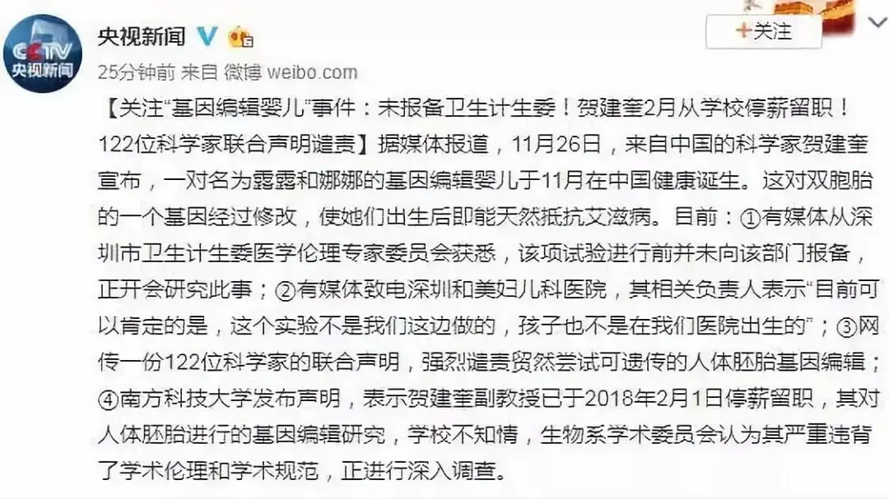
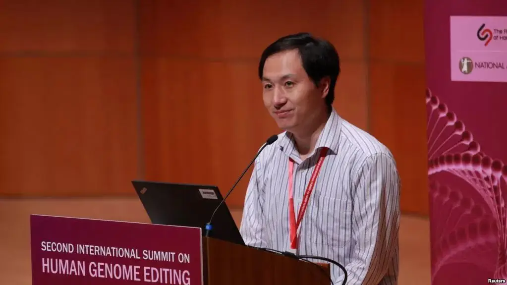
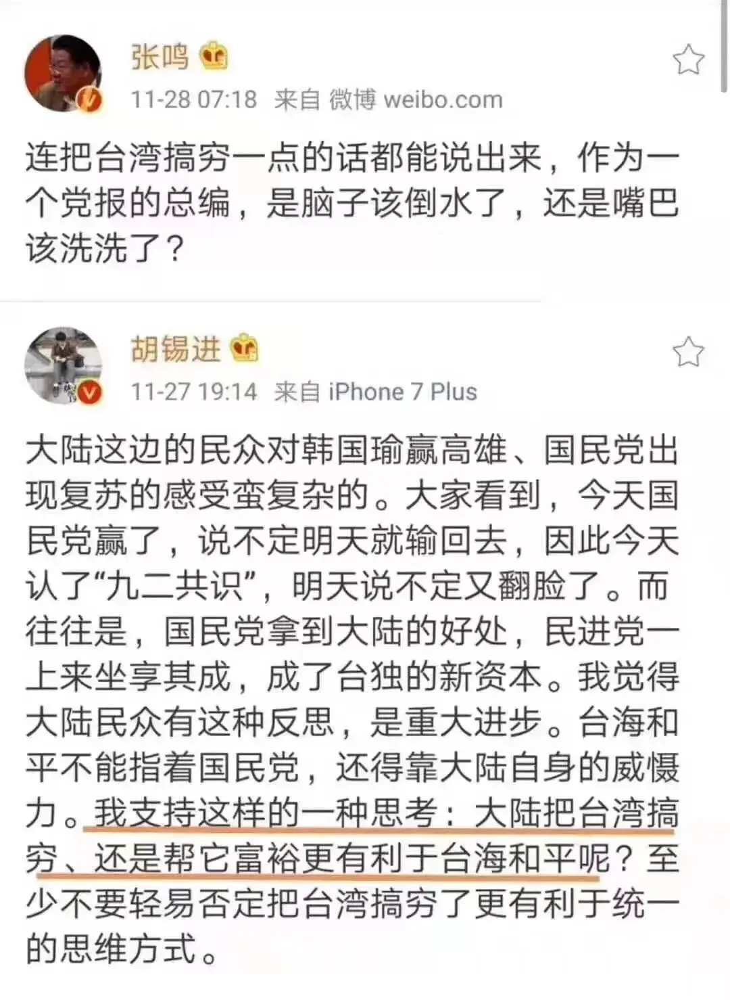
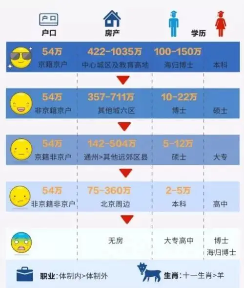
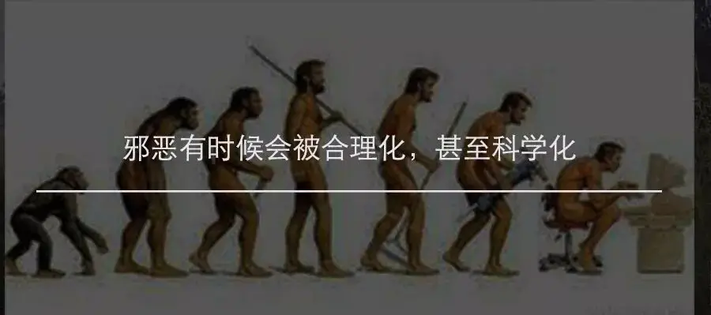
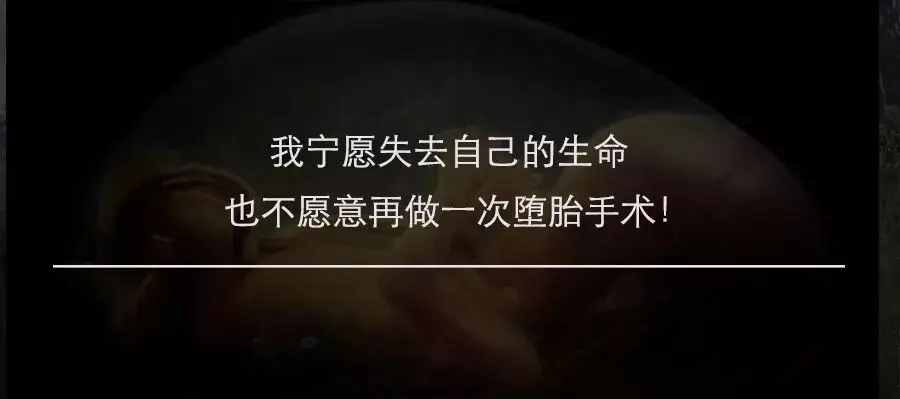
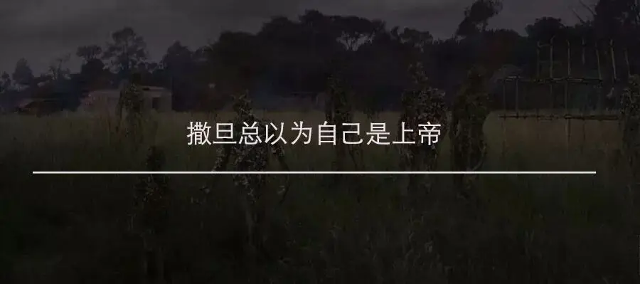

最近基因编辑婴儿引发了全民的讨论浪潮，令我诧异的是，身边有很多人认为这样做无可厚非，即使过程中存在着一些争议，但站在全人类不断进步的历史长河中看，这不一定是坏事，甚至可能是一座促进人类走向进步的里程碑。
听到这样的想法，我无比震惊，也更深地明白为什么世界上第一例基因编辑婴儿会出现在我们国家，这背后有着很深的社会和文化基础。
-01-
为什么有人赞成贺建奎的做法。
他们认为如果贺建奎成功，真的可以找到根治艾滋病的方法，这样做有什么错。
也就是说，为了基因技术的未来，为了彻底根治艾滋病，即使让两个孩子处于极大的风险中，这件事也是无可厚非的。
请注意这背后的逻辑和思想。
可能造福更多人的新技术的价值 > 两个孩子的价值
所以这个事可以做。
这是一个生意的逻辑，是一种权衡未来收益和现实状况的考虑。
这个收益对于贺建奎来说可能是他的科技梦，对支持贺建奎的人来说，是未来可以根治艾滋病的方法。
他们认为这个收益的价值远远大于两条生命的价值，所以这个事情可以干，哪怕不被人理解、受尽唾骂，也可以干，我是为了全人类，我是为了更多的人，我问心无愧。
所以，这两个孩子可以成为实验品，她们是为全人类的福祉而出生，即使牺牲了自己的生命，她们也是有价值的，未来的人类会纪念她们今天所做出的牺牲。
昨天贺建奎在香港基因学术峰会上的演讲和回应便充满了以上逻辑的自信和傲慢，面对大范围的声讨，贺建奎并没有悔意。

-02-
“把生命当做生意”的逻辑背后有两个重要的思想。
第一是集体主义。
集体有着个体难以比拟的力量，为了最大程度提高集体的能量，个体需要调整自己的状态去适应集体的发展方向。
可是集体的方向谁来决定？是希特勒 ，还是斯大林？
当集体的领路人变成恶魔后，这个集体就是可怕的纳粹，他的力量虽然很大，但却是世界上最大的灾难。
所以，集体虽然很有力量，但是现代国家很警惕这份诱惑，并没有拼命地宣扬集体主义，去告诉大家要随时做好牺牲小我成就大我的觉悟，而是转向去肯定个体价值，去保护个人神圣不可侵犯的权利。
清末民初游历过德国的杨昌济(杨开慧烈士的父亲)在《达化斋日记》甲寅年(1914)记载了这样一个故事:
德国前皇维廉第一在位时，有离宫在坡疵坦地方。离宫之前有磨房，欲登高远览一切景色，为所障碍。德皇心厌之，传语磨房主人曰:“此房价值几何?汝自言之，可售之于我。”
孰意磨房主人殊强项，应之曰:“我之房基，无价值可言。”德皇闻之，赫然怒，令人将磨房毁去。
磨房主人袖手任其拆毁，从容曰:“为帝王者，或可为此事?然吾德国尚有法律在，此不平事，我必诉之法庭。”
彼竟与德皇构讼。法庭依法判决德皇重将磨房建筑，并赔偿其失。德皇为法律屈，为人民屈，竟如法庭所判。
这是一个关于强拆的故事，毫无价值的磨坊挡住了国王离宫的视野，所以国王一怒之下将磨坊强拆。
之后磨坊主将国王告上法庭，国王最终败诉，不得不为其建了一个新的磨坊。
这个故事一直被看为是现代法治精神的典范，我的磨坊是没有价值，但那是我的，是我的私有财产，就是王权都没有权力拆掉。
高举个体权利在某些时候看上去很弱智，甚至确实会影响公共福祉，但是从长远来说，个体权利的保护有力地规避了更具破坏力的集体事故。
有人要倒车，有人要成魔，有人要踏平别人的房子，没有经过别人的同意，你就不能这么干！
当你高谈阔论把别人往沟里带的时候，有人发出质疑，你就不能打着集体的名义把他消除掉。
所以，高举个体权利而不是集体利益才是真正的现代文明。
中国人有小聪明，总是无法理解这种大智慧，我们迷恋集体，我们习惯为了大我牺牲小我。
其实当我们漠视小我的时候，生命的权力就无从谈起了，连一个人的权利都无法保护，你还指望保护更多人的权利，那是痴心妄想。

所以文戈能在中国持续十年，敢讲真话的、敢提不同意见的都被冠上黑五类、反革命份子的帽子被处死了。
在集体性事故的面前，我们的小聪明是可怕的毒药。
今天，我们并没有从历史中吸取教训，在许多事上，我们不讲大是大非，只看谁的势力大。
集体、民族、国家总是我们做恶的遮羞布。
回到基因编辑婴儿这件事上，虽然她们只是两个势单力薄的婴孩，即使他们的父母同意做手术，她们仍然享有不可剥夺的生而为人的权利和尊严，任何人、任何机构都不能以科学或者集体的名义将她们变成实验品。
-03-
“敢把生命当生意看”背后的第二个重要思想是社会达尔文主义。
1894年，甲午中日战争中国战败，举国沉浸在一阵屈辱和阴霾中，1898年严复翻译的赫胥黎的《天演论》横空出世。
“物竞天择，适者生存”正中时人痛处，一时间成为中国人奋发图强的重要思想。
进化论从生物学扩展到社会学影响极其深远，中国人坚信只有让自己变得强大才会不被人欺负，才会更有尊严。
直至今日，这样的思想依旧是大多数国人心中的顶配鸡汤，大家认为社会就是这么残酷，你不努力，就要被淘汰，谁的拳头硬谁才有话语权。
优秀的人配优秀的人，身价过亿的配身价过亿的，只有你到达某个阶段，你才能进入某个阶层，你的另一伴也才会更优秀。
和优秀的人结婚生子，你们的下一代会更加优秀，这样的人生才是有意义、有价值的。
丛林法则、优胜劣汰让大家充满危机感，变得更加奋发图强。
可是，社会达尔文主义也让大家形成了一个牢不可破的鄙视链，985鄙视211，211鄙视普通一本，普通一本鄙视二本；暴发户鄙视读书人，读书人也鄙视暴发户；北上广鄙视二线城市，二线城市鄙视其他城市，其他城市则鄙视村里人。
总之，现实就是这么残酷，情怀、理想、道德、伦理不要多讲，有权、有钱、有颜值才是硬道理。
如今，基因编辑婴儿让这些社会达尔文主义信徒看见了新的角逐平台，他们认定这件事虽然存在伦理问题，但是势不可挡，人类要进步就要经历残酷和流血。
在这些人眼中，这两个婴儿只是他们走向高端的垫脚石，一心求上的他们看不到婴儿身上作为人的尊严。

-04-
《世界法西斯：一历史百科全书》中是这样定义法西斯主义：
一种具革命形式的极致民族主义，此民族主义决心要动员所有「健康的」社会和政治能量，以抵抗其认定造成民族衰败的威胁，以实现国族或民族脱胎换骨的目标。
该民族主义方案涉及政治文化的复兴，包括支撑政治的社会及伦理文化的重生，而在某些案例此重生包括了基于种族学说的优生学概念的复兴重生。
从这个定义里可以看到，法西斯主义其实就是将集体主义和社会达尔文主义一起推向极致。
极致社会达尔文主义给了德意志民族无上的优越感，他们认为全世界只有德意志民族才是最优秀的。
过去，他们看不惯犹太人，但还不至于敢痛下杀手，今天进化论给了他们歧视犹太人的科学依据。
当他们在集中营里疯狂屠杀犹太人的时候，他们从不以为自己杀的是人，而是一群低劣的猪猡，集中营只是动物屠宰场。
而极致的集体主义让权力制衡失效，你要么随波逐流，要么被清除在外，所以纳粹制造了人类历史上闻所未闻的惨绝历史。
苏联也是结合了这种极致的集体主义和社会达尔文主义，不同于德国纳粹的种族歧视，他们是阶级歧视，所有的资产阶级、富农都被看为是万恶的吸血鬼，一次又一次的肃清让无数人丧命。
今天，我们也有着孕育邪恶的土壤，基因编辑婴儿这件事某种程度上是一块试金石。
如果我们真的允许这件事继续下去，我们都可以预想到未来某个突然失踪的亲人会出现在别人的手术台上。
那将是一件多么可怕的事。

-05-
既不能以权衡利益大小来看待这件事，也不能怀着一种你不做别人迟早会做的危机感来稀释这件事背后的伦理问题。
那该如何面对？
我的答案是信仰，其实极致的集体主义和社会达尔文主义的起点是无神论，纳粹出现之前是德国的信仰滑坡，而老大哥更是彻彻底底的无神论。
人是堕落的罪人，每个人都习惯以自我为中心，因为差异而相互不待见普遍存在。
基于信仰的西方世界中，他们认为每个人都是上帝的创造，都是独一无二的存在，你不会因为比另一人更漂亮就觉得你更像一个人，你也不会因为自己工作能力比不上别人就觉得自己毫无价值。
是上帝赋予了每个人不可剥夺的生命权，你生而就有作为人的尊严，正是这样的信仰曾征服了嗜杀成性的罗马帝国。
当德国、苏联把上帝拿走后，仁权也就消失了，人人生而平等变成了一句空洞的漂亮话。
种族主义、进化论则进一步颠覆了人们对于基督教人论的看法，信仰松绑后，法律、道德、伦理都会没有底线，因为绝对的标准没了，每个人都急着用各种理论重新解释世界。
因此20世纪是人类各种思想、主义最泛滥的世纪，同时也是人类历史中最惨绝人寰的世纪，两次世界大战、红色膏棉、文戈都发生在这个世纪。
基因编辑婴儿的出现是对我们的提醒，如果没有办法建立信仰，如果人人生而平等不会深入人心，鄙视链会一直存在，对仁权的践踏也会一直存在。
也许，在中国我们已经对满大街的流产广告见惯不惯，对经常冒出来的人口拐卖新闻已经习以为常，你会觉得基因编辑婴儿也不是什么大事，没必要想这么多。
可是，这件事是冒出来的冰山一角，如果现在还不改变方向回到正路，下一次就是可怕的沉船！
推荐阅读
▼
（点击图片即可获取全文）





这里没有挑逗你眼目情欲的小鲜肉
也没有挑动你肉体情欲的段子
更没有膨胀你今生骄傲的鸡血
我们只在乎那些最质朴真诚的作品
在那里我们才能恢复真正的想象力
我们也坚信这才是我们真正需要的

ID:Six_hundred_hits
长按二维码，一键关注
【六百击】
-END-
电影评论
尽情分享朋友圈

苹果打赏通道
小提示：文末广告是腾讯配送广告，内容与本号无关，但您的每次点击（无需反复点）都会给平台带来几毛收益，欢迎您点击支持六百击。